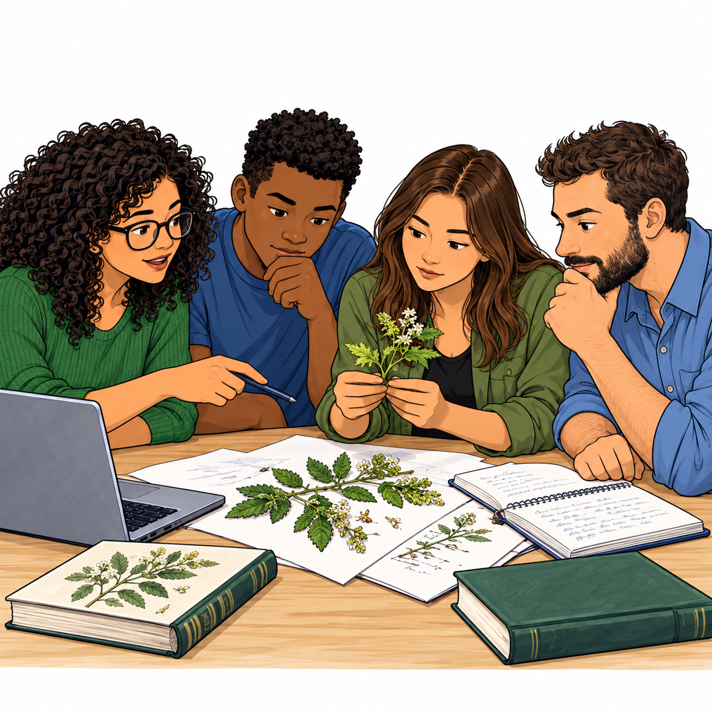

UM LIVRO DO CURSO SDM 2026
Da pergunta
ao artigo
Uma equipe, uma espécie e as decisões que transformam registros em conhecimento.
Aprenda os fundamentos da modelagem de distribuição de espécies acompanhando uma história de pesquisa. Conceitos essenciais, exemplos de R e um caminho organizado pelo ODMAP.
Começar a leitura →
Visão geralD
DadosM
ModeloA
AvaliaçãoP
Predição
Leia, experimente, volte às decisões
O caso principal acompanha Zaprionus tuberculatus, do planejamento à projeção climática. Um segundo caso, com Amanoa cupatensis, apresenta Ensemble of Small Models. Você pode ler em sequência ou procurar uma etapa no sumário.
Os trechos de código indicam sua origem e os objetos necessários. As ilustrações e os mapas vêm do curso; as figuras de resultados são exemplos já presentes nos slides. O livro não apresenta uma nova execução dos modelos.
O percurso
Uma equipe, uma espécie e uma pergunta
Antes do primeiro mapa, precisamos saber que pergunta queremos responder.
02 · O · OverviewDo nicho ao mapa
Um ambiente adequado e uma população presente são coisas diferentes.
03 · O → D → M → A → PO plano da pesquisa com ODMAP
Um protocolo para tornar as decisões explícitas, do objetivo à predição.
04 · Preparação · transversalO primeiro dia no R e no RStudio
Organizar o trabalho reduz erros antes mesmo de escolher um algoritmo.
05 · D · DataOs pontos têm uma história
Um registro de ocorrência é uma evidência localizada, com origem e limitações.
06 · D · DataLimpar sem apagar a história dos dados
Qualidade, detectabilidade e viés de amostragem exigem decisões diferentes.
07 · D · DataO ambiente em camadas
Escolher preditores começa pela ecologia e continua pela geometria dos dados.
08 · M · ModelOnde o modelo aprende
O domínio de calibração define quais ambientes serão contrastados com as presenças.
09 · A · Assessment, planejado antes do ajusteSeparar para aprender sobre o erro
Dados próximos podem fazer a avaliação parecer mais favorável do que a transferência real.
10 · M · ModelA equipe ajusta os primeiros modelos
Algoritmos são maneiras diferentes de representar associações, com escolhas de complexidade.
11 · A · AssessmentO mapa é bonito. E a evidência?
Avaliar exige relacionar métricas, desenho e consequência dos erros.
12 · A → M · diagnóstico e retornoO primeiro resultado muda a conversa
Resultados preliminares são uma oportunidade de formular verificações, sem inventar certezas.
13 · D ↔ M ↔ ARefinar com uma razão, uma mudança e uma comparação
Uma mudança no workflow precisa responder a um problema identificado.
14 · P · PredictionProjetar no espaço e no tempo
A relação ajustada viaja; os pressupostos e a incerteza viajam com ela.
15 · M → A → P · Ensemble of Small ModelsUma segunda espécie: aprender com pouca informação
Modelos pequenos reduzem a dimensão de cada ajuste, sem criar dados novos.
16 · Comunicação · síntese do ODMAPDa reunião de resultados ao artigo
Escrever é organizar a relação entre pergunta, método, evidência e alcance.
17 · ConsultaGlossário
Termos e siglas do curso, organizados em ordem alfabética.
18 · ConsultaFontes, rastreabilidade e reprodução
O que foi lido, o que foi adaptado e o que foi efetivamente verificado.
19 · ConsultaReferências
Publicações, livros e recursos citados nos slides do curso.
Materiais de trabalho
Registro ODMAP · Registro de refinamentos · Roteiro de artigo · Scripts e fontes
A organização de leitura foi inspirada em Análises Ecológicas no R. Esta adaptação tem texto, narrativa e projeto visual próprios.